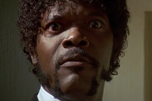

Samuel L. Jackson
Well, the way they make shows is, they make one show. That show's called a pilot.
Stuff
The lysine contingency - it's intended to prevent the spread of the animals is case they ever got off the island. Dr. Wu inserted a gene that makes a single faulty enzyme in protein metabolism. The animals can't manufacture the amino acid lysine. Unless they're continually supplied with lysine by us, they'll slip into a coma and die.
Like you, I used to think the world was this great place where everybody lived by the same standards I did, then some kid with a nail showed me I was living in his world, a world where chaos rules not order, a world where righteousness is not rewarded. That's Cesar's world, and if you're not willing to play by his rules, then you're gonna have to pay the price.
Now that we know who you are, I know who I am. I'm not a mistake! It all makes sense! In a comic, you know how you can tell who the arch-villain's going to be? He's the exact opposite of the hero. And most times they're friends, like you and me! I should've known way back when... You know why, David? Because of the kids. They called me Mr Glass.
More Stuff
The lysine contingency - it's intended to prevent the spread of the animals is case they ever got off the island. Dr. Wu inserted a gene that makes a single faulty enzyme in protein metabolism. The animals can't manufacture the amino acid lysine. Unless they're continually supplied with lysine by us, they'll slip into a coma and die.
Like you, I used to think the world was this great place where everybody lived by the same standards I did, then some kid with a nail showed me I was living in his world, a world where chaos rules not order, a world where righteousness is not rewarded. That's Cesar's world, and if you're not willing to play by his rules, then you're gonna have to pay the price.
Now that we know who you are, I know who I am. I'm not a mistake! It all makes sense! In a comic, you know how you can tell who the arch-villain's going to be? He's the exact opposite of the hero. And most times they're friends, like you and me! I should've known way back when... You know why, David? Because of the kids. They called me Mr Glass.